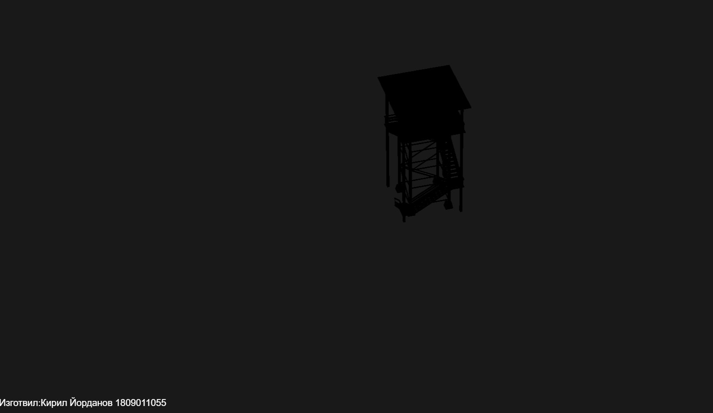

ThreeJS
This was an uni project. This is a wooden tower using 3js visualisation tool.
link:github.com/kirilyordanov99/Threejs
Technologies:
- - HTML
- - JS
This was an uni project. This is a wooden tower using 3js visualisation tool.
link:github.com/kirilyordanov99/Threejs